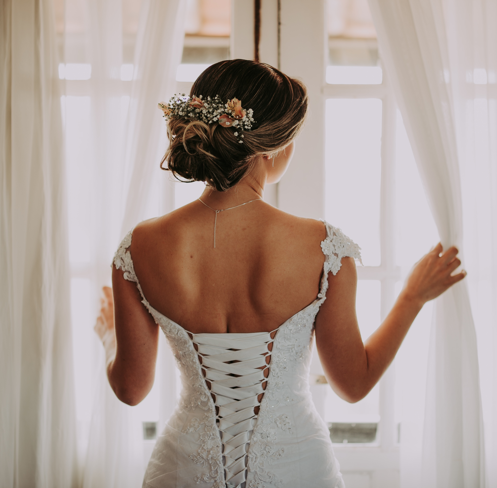
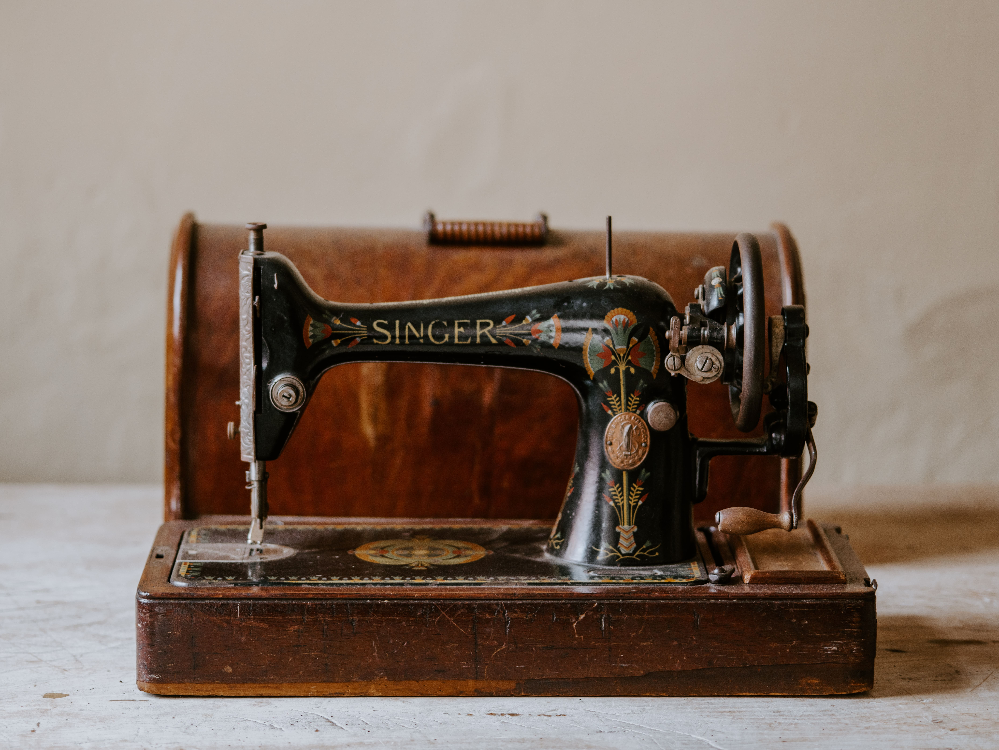

Welcome
I'm Ava, a Paris-based corset maker with a BA in Fashion Design from the London College of Contemporary Arts. I've been passionately crafting corsets for a decade, specializing in styles from the 16th to the 20th century since the inception of my independent fashion brand. Why make corsets, you might ask? Well, as a self-proclaimed fashion history nerd, I can't help but be baffled by the misinformation surrounding these intricate garments. I am here to change that!
Corset History
Corsets are designed to shape and support the torso and they have been worn for centuries. Corsets first emerged in the 16th century, evolving from stiffened bodices into more structured undergarments. They reached the height of popularity in the 19th century. Corsets have played various roles throughout history, from shaping fashion trends to offering the wearer needed support. While they faced criticism for health concerns, well-constructed corsets were designed for comfort and function.
The enduring myths about corsets from the past continue to shape public perception today, despite the fact that corsets remain a part of modern fashion and culture. These persistent misconceptions include the belief that corsets are hazardous to health and highly uncomfortable. There's also the common misconception that only women wear corsets and that they serve solely as restrictive fashion pieces, leading to bedridden states and vanity. In reality, corsets are still worn by many, including celebrities who showcase them on the red carpet. Some individuals wear corsets for medical reasons, as they can provide valuable support. Moreover, those engaged in historical re-enactments find corsets essential for capturing the authentic styles of the past, an act that can be both for plesure and politics.
Dive Deeper

Get In Touch
If you'd like to order a custom made corset, please fill in the form below and you will receive further information on how to proceed.